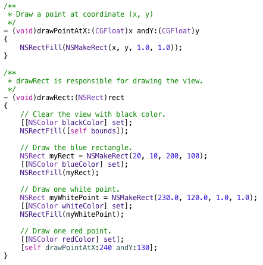

1.
Draw a Rectangle and Two Points
- From Creating A Project to Drawing
Back to Cocoa Graphics table of contents
This tutorial will show you
the steps from creating a project to drawing a rectangle
and two points. Xcode 4.5.2 was used here. I assume you know the basics
of Objective-C.
The focus of this tutorial is to show you the steps to draw primitive
shapes in a view. Therefore, I will avoid using other techniques not related to
Cocoa graphics. In addition, I will not try to draw beautiful things for now.
These extra efforts might distract you from graphics. However, I encourage you
to play with the code and see the effects, which is a great way to REALLY learn
graphics and any other programming techniques. After you gaining the knowledge and skills about Cocoa graphics, you
will be able to enjoy generating beautiful drawings and maybe share them with the world.
As the title mentioned, I will show you how to create a project, create a view
class, and draw a rectangle and a few points.
Create the basic structure of the program
- Launch Xcode.
- Select menu: "File > New > Project...".
- Select "OS X > Application > Cocoa Application" template. Click "Next".
- Fill the dialog similar to the following figure. Click "Next".
- Select a location for the project. Click "Create" with default settings.
- Click "Run" and you will see a window like the following figure.
- Select menu: "RectangleAndPoint > Quit RectangleAndPoint" to quick this program
for now. The basic structure of the program is done.
Create a customed view class - MyView,
and draw a blue rectangle
- Select "RectangleAndPoint" folder in the Project Navigator
- Select menu: "File > New > File...".
- Select "OS X > Cocoa > Objective-C class" and click "Next".
- Complete the dialog like the following figure and click "Next".
- Click "Create" with default settings.
- Revise "MyView.m > drawRect:" so it looks like the
following.
- In this code, we first created a rectangle, myRect. (20, 10) is the position of
the origin. 200 is the width and 100 is the height.
- We need to set the color before we draw anything. Otherwise, the default color
or the previous used color is used. Here, we set the color to blue.
- The last line of code filled the rectangle with the set color.
- By the way, the default origin of the view is the bottom left corner. Similarly,
the origin of a rectangle is the lower left corner.
- Notice that the length unit of the coordination is 1/72 inch. Therefore, 72
units correspond to one inch and 0.1 unit corresponds to 1/720 inch on the
screen.
- Select "MainMenu.xib" in the Project Navigator.
- Select "Window - RectangleAndPoint".
- In "Object library" pan, type in "Custom View" in the search bar. You shoud see
something similar to the following.
- Drag "Custom View" from the "Object library" to the RectangleAndPoint window.
The result will be
similar to the following.
- Adjust the position and the size of the "Custom View" so it looks like:
- When "Custom View" is selected, select "Identity inspector" and select/type in
"MyView", like the following:
- Click "Run" and you will see a blue rectangle in your window.
Draw two points
To my knowledge, there is no native support for drawing a point. Instead, we can
use rect to draw a point. In the following code, the
drawRect: function is revised to change the background to black and draw
a white point. An additional function, drawPointAtX: andY:, was created to draw a
red point at (x, y). The following is the revised code:

The following is the result.
And, the following is the zipped final project.
RectangleAndPoint.zip